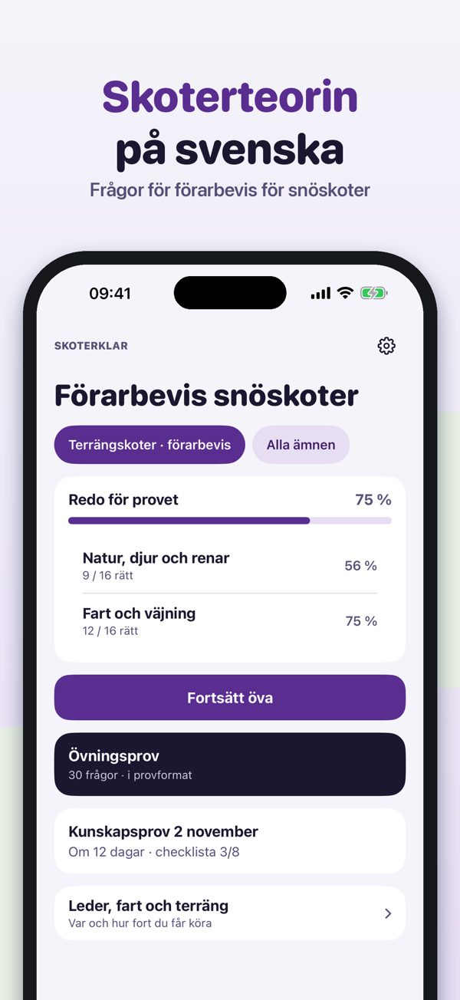
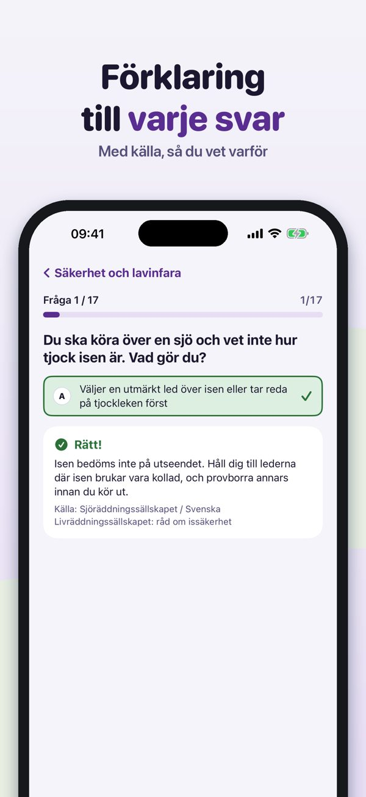
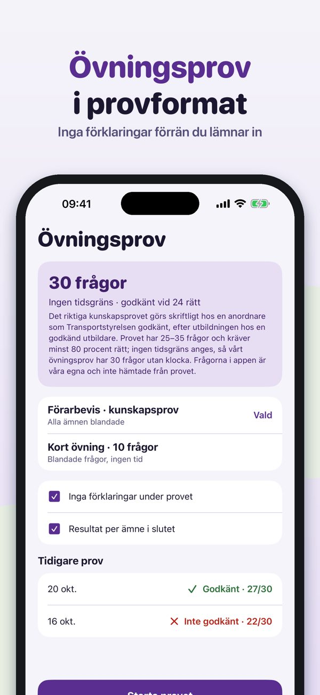
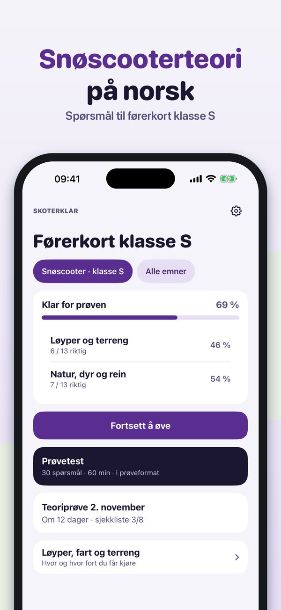
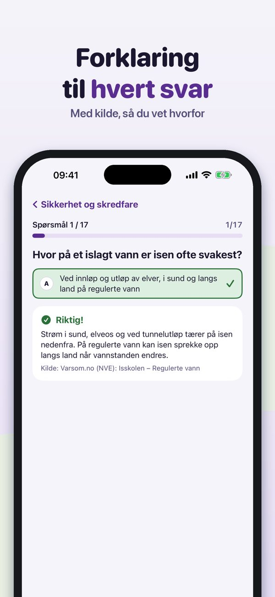
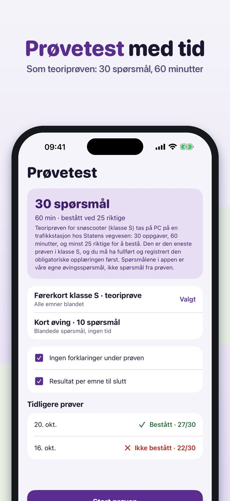
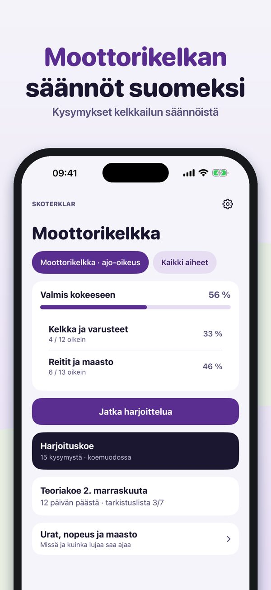
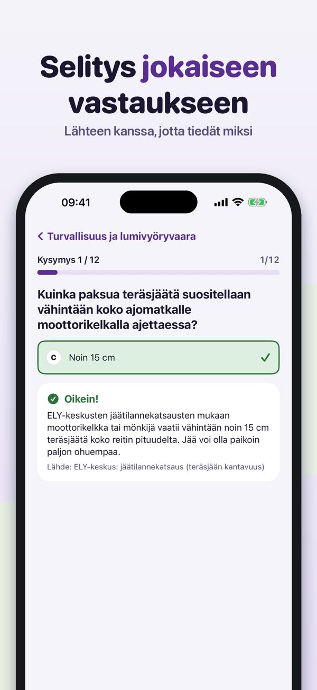
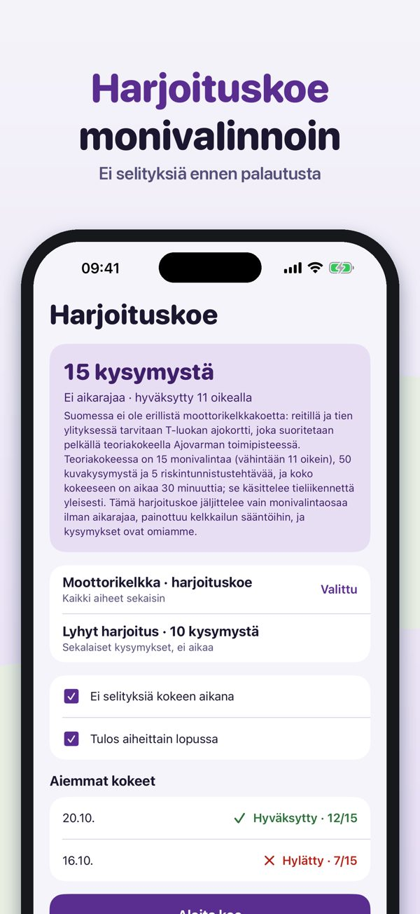

Teori för snöskoter på svenska



Skoterklar hjälper dig att öva inför kunskapsprovet för förarbevis för snöskoter – med skoterregler, inte bilregler.
Du kan öva 20 frågor, ordlistan och checklistan utan köp. Fullversionen är ett engångsköp som låser upp alla frågor, övningsprov och statistik. Ingen prenumeration.
Skoterklar är fristående och inte kopplad till Transportstyrelsen eller någon utbildare. Provet gör du hos en utbildare. Frågor för Sverige, Norge och Finland.
Terms of Use (EULA): https://www.apple.com/legal/internet-services/itunes/dev/stdeula/
Privacy: https://baytechbv.github.io/privacy/snoskoter-nordic/
Teori til snøscooter-førerkort



Skoterklar hjelper deg å øve teorien til førerkort klasse S for snøscooter – med scooterregler, ikke bilregler.
Du kan øve på 20 spørsmål, ordlisten og sjekklisten uten kjøp. Fullversjonen er et engangskjøp som låser opp alle spørsmål, prøvetester og statistikk. Ingen abonnement.
Skoterklar er uavhengig og ikke tilknyttet Statens vegvesen. Prøven tar du på trafikkstasjonen.
Terms of Use (EULA): https://www.apple.com/legal/internet-services/itunes/dev/stdeula/
Privacy: https://baytechbv.github.io/privacy/snoskoter-nordic/
Kelkkailun säännöt ja teoria



Skoterklar auttaa harjoittelemaan moottorikelkan teoriaa ja sääntöjä – kelkan säännöillä, ei henkilöauton.
Voit harjoitella 20 kysymystä, sanastoa ja tarkistuslistaa ilman ostoa. Täysi versio on kertaosto, joka avaa kaikki kysymykset, koeharjoitukset ja tilastot. Ei tilausta.
Skoterklar on itsenäinen eikä liity Traficomiin tai Ajovarmaan. Suomessa kelkkareiteillä tarvitaan vähintään T-luokan ajo-oikeus; teoriakokeen teet Ajovarmalla.
Terms of Use (EULA): https://www.apple.com/legal/internet-services/itunes/dev/stdeula/
Privacy: https://baytechbv.github.io/privacy/snoskoter-nordic/